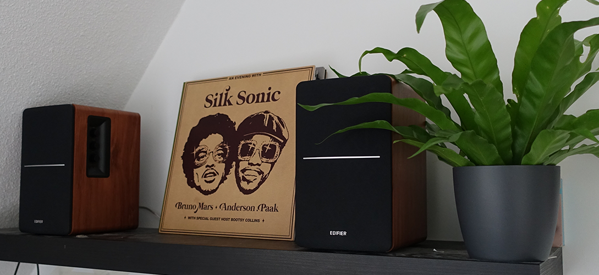

Wat zijn vinylplaten?
Wat houdt een vinylplaat in?
Je kent ze misschien ook wel als grammofoonplaten of gewoon “platen”. Het is een vorm van analoge geluidsopnamemedia die voor de komst van de cd en mp3 erg populair was. Deze platen zijn gemaakt van vinyl en hebben groeven in het vinyl waar de geluidsopname zich in bevind. Tot op de dag van vandaag worden deze platen nogsteeds verkocht en geluisterd maar ze waren voornamelijk populair in de jaren 50s-60s.
Opmerkelijke kenmerken
Deze platen hebben een aantal opmerkelijke kenmerken: De cd’s en mp3’s waren digitaal maar de plaat bevatte analoge opnamen. Dat betekent dat de geluidsgolven direct in de groeven worden gegraveerd. Dat levert een unieke kwaliteit van geluid op. De platen worden afgespeeld op een platenspeler. Deze platenspeler heeft een naald die in de groeven van de plaat loopt. De meest voorkomende snelheden zijn 33 1/3 RPM (toeren per minuut) voor albums en 45 RPM voor singles. Platen worden meestal verkocht in een hoes. Die hoes bevat vaak informatie over de nummers en een kunstwerk. Dat maakt deze platen, naast dat ze goede muziek bevatten, ook nog eens mooi om naar te kijken. In de 80s en 90s verloren de platen veel van hun populariteit maar ze hebben in de afgelopen jaren een grote comeback gemaakt. Veel mensen vinden dat platen een nostalgisch gevoel geven. En daarnaast zijn sommige platen verzamelobjecten die een heleboel waard kunnen zijn. Helaas zijn platen erg gevoelig voor krassen en andere vormen van beschadiging daardoor kan de geluidskwaliteit worden beïnvloed. En je hebt ook nog een goede platenspeler en speakers nodig om het beste uit je platen te halen